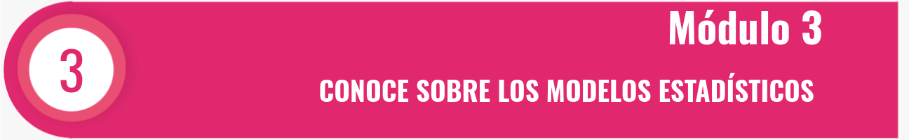

Un ingeniero está analizando la resistencia a la compresión de piezas que son utilizadas en la fabricación de motores para vehículos. La resistencia a la compresión se distribuye normalmente con \(\sigma^2 = 1000 \, (psi)^2\). Una muestra aleatoria de 12 piezas presenta una media en la resistencia de compresión \(\bar{x} = 3250 \, psi\).
Una marca de margarina dietética fue analizada para determinar el nivel de ácido graso poliinsaturado en porcentaje. En una muestra de seis paquetes se obtuvieron los siguientes datos: 16.8, 17.2, 17.4, 16.9, 16.5, 17.1.
x <- c(16.8, 17.2, 17.4, 16.9, 16.5, 17.1)El porcentaje de titanio contenido en una aleación utilizada en artículos para escalar fue medido en 51 partes seleccionadas aleatoriamente. La desviación estándar muestral es \(s = 0.37\).
De 1000 casos de cáncer de pulmón seleccionados al azar, 823 resultaron en muerte dentro de los 10 años posteriores a su detección.
Se tomaron 30 unidades de tabaco habano para medir su contenido de alquitrán. Los datos son los siguientes:
x <- c(1.542, 1.622, 1.440, 1.459, 1.598, 1.585, 1.466, 1.608, 1.533, 1.498, 1.532, 1.546, 1.520, 1.532, 1.600, 1.466, 1.494, 78, 1.523, 1.504, 1.499, 1.548, 1.542, 1.397, 1.545, 1.611, 1.626, 1.511, 1.487, 1.558)1.542 1.622 1.440 1.459 1.598 1.585 1.466 1.608 1.533 1.498 1.532 1.546 1.520 1.532 1.600 1.466 1.494 78.000 1.523 1.504 1.499 1.548 1.542 1.397 1.545 1.611 1.626 1.511 1.487 1.558
Los siguientes datos corresponden al tiempo de secado (en horas) de una nueva pintura:
x <- c(3,4, 2,5, 4,8, 2,9, 3,6, 2,8, 3,3, 5,6, 3,7, 2,8, 4,4, 4,0, 5,2, 3,0, 4,8)3, 4, 2, 5, 4, 8, 2, 9, 3, 6, 2, 8, 3, 3, 5, 6, 3, 7, 2, 8, 4, 4, 4, 0, 5, 2, 3, 0, 4, 8
El director de una fábrica desea estimar el tiempo promedio que toma perforar tres agujeros en una placa metálica utilizada para mesas. ¿Cuál debe ser el tamaño de la muestra para que el intervalo de confianza del 95% esté dentro de 15 segundos de la media real, sabiendo que \(\sigma = 40\)?
En un proceso de fabricación se compara la tensión de ruptura de dos métodos: estándar y con aleación. Las tensiones son las siguientes:
# Proceso estándar:
proc_est <- c(428, 419, 458, 439, 441, 456, 463, 429, 438, 445, 441, 463)
#Proceso nuevo:
proc_nue <- c(462, 448, 435, 465, 429, 472, 453, 459, 427, 468, 452, 447) proceso estandar 428, 419, 458, 439, 441, 456, 463, 429, 438, 445, 441, 463 Proceso nuevo: 462, 448, 435, 465, 429, 472, 453, 459, 427, 468, 452, 447
De una muestra aleatoria de 87 estaciones de gasolina, 13 tenían al menos un tanque subterráneo con fuga.
Resuelve los ejercicios utilizando software estadístico R y verifica tus resultados con las fórmulas vistas.